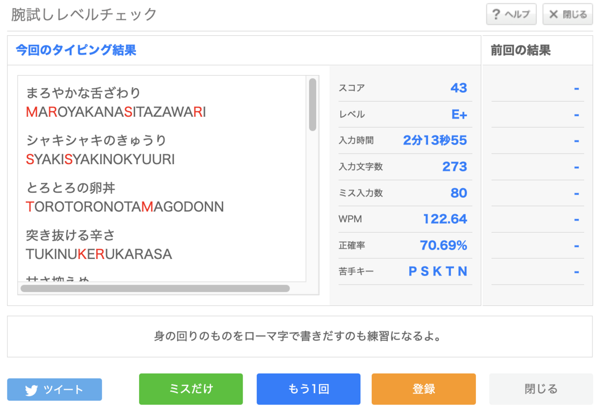
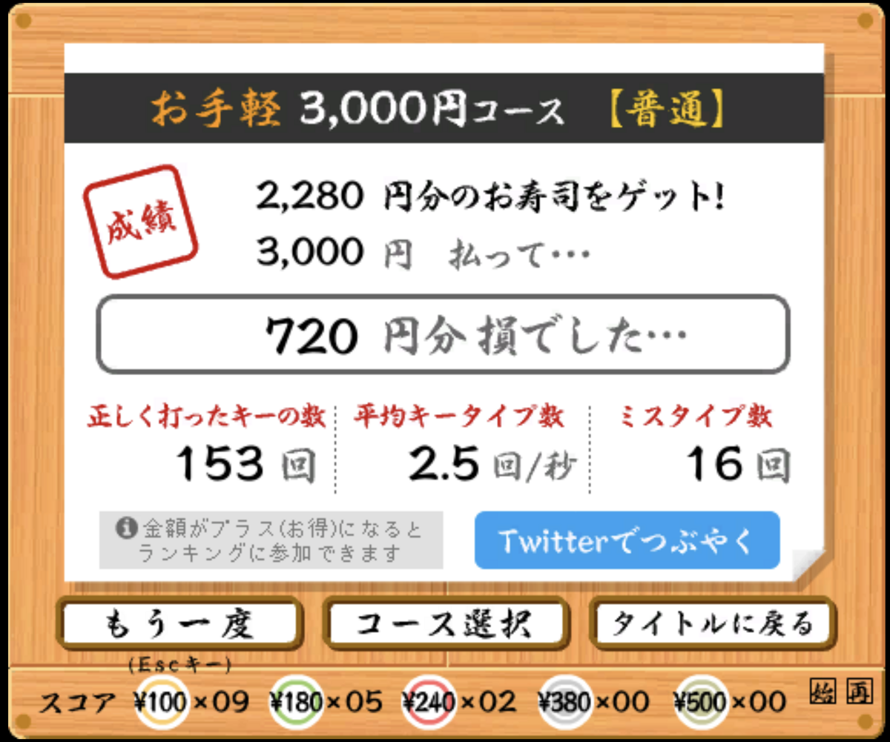

投稿日: 2023/08/24 22:37:42
カテゴリ: キー配列研究
サムネイル: 

前回の更新から約2週間くらい経ったのだけれど、いざ測ると速度的には実際さほど速くならず。( 寿司打は実際はかなりブレがあって、2.0〜2.5回/秒の間で上下する。 )
ただ体感的にはだいぶ配置を意識することなく、ぼーっとしてても打てる感じになってきたように思う。
ミスタイプはまだまだ多くて、特に拗音拡張がまだ速く打てないので、それが計測時の速度を落としてしまっている原因のようだけど、新下駄配列の練習時と同様、よく打つ単語とコンビネーションはサクサク打てるようになってきたので、実際に文字打ちするのは現段階でもさほど苦ではない。（ただ、途中で実は薙刀式v14からv15に移行したので、慣れてない部分がある。）
練習時の傾向が新下駄配列と似ているのと同様に、打鍵感もこの段階になると想像以上に新下駄配列と似ているという印象で、かつ親指シフトも存在することによって、実際に熟練して打てるようになるにはまだまだ練習が要りそう。
ただ、薙刀式のいいところはさほど熟練していなくても記憶やロジックを頼りにガンガン打っていけるところにあるように感じていて、新下駄配列のようにある程度熟練しないと普通に打てないというわけではないのが興味深い。これはある意味でDvorakやAstarteのようなローマ字配列の特色と似ている気がするし、一方でやはりかな配列であり、親指シフトであるので、個人的にはとても不思議な感覚。
正直ここまでして新下駄配列と別に薙刀式を打てるようになる必要性の是非を時々感じるのだけど、以前書いたように、今の自分にはなんとなく人差し指・中指シフトだけでなく親指シフトを組み合わせて使えるようになることが一つのブレイクスルーになるような気がしていて、かつ新下駄配列は他人に薦めるには苦行過ぎるので、自分自身も「普通の」かな配列を打てるようになっておきたいという狙いがある。
とはいえ、タイピング練習をずっとやっているとなんだか涼宮ハルヒの憂鬱の『エンドレスエイト』ような気分は若干あって、いくらタイピング自体が好きとはいえ、一定の練習時間を毎日確保するのはそれなりに精神力が必要だなと思った。
ちなみに薙刀式の拗音拡張を練習していると、逆にQwertyなどのローマ字配列はよくできているなと関心していて、ヴィヴァルディ（vivarudhi）なんかはローマ字配列ではサクサク打てる割にはJISかな配列では大苦戦するし、SHOやJO、RYOなど、どんなコンビネーションも2,3打に収まる実用性が、実はローマ字配列人気(?)を支えているのかなと思ったりした。
そう思うとJISかな配列に拗音拡張さえ入れればいいんじゃないかと思ったりするのだけれど、そうするとまた覚えやすさだとかいろんな問題が出るはずで、JISかな配列で拗音拡張だけ付けたバージョンがないのはそういうことなのかなと思ったりもした。